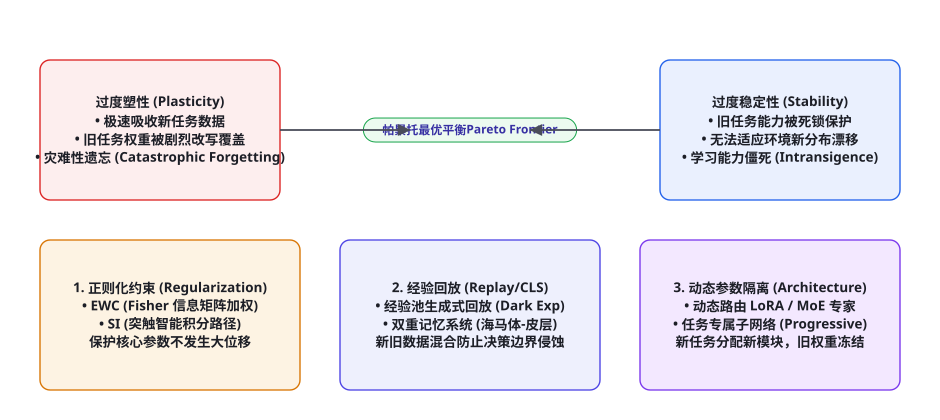
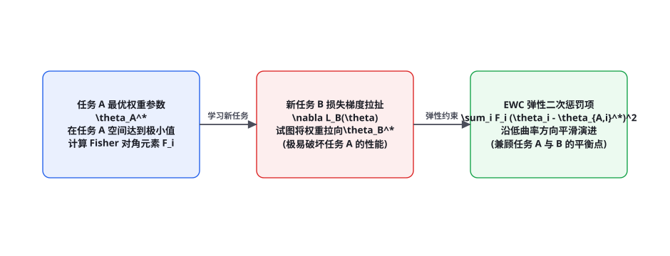

第 97 章 · 终身学习与持续适应：灾难性遗忘与稳定性-塑性困境
人类智能最令人叹为观止的特质在于其终身持续适应（Lifelong Continual Adaptation）能力：一个人学会了弹钢琴，绝不会因此忘掉如何骑自行车或如何解微积分方程。然而在人工神经网络中，这一理所应当的特性却化为了著名的「灾难性遗忘（Catastrophic Forgetting）」梦魇：当一个训练好的模型在全新的下游任务上进行微调时，新任务的梯度更新会以暴风骤雨之势覆盖掉旧任务的神经突触连接，导致旧任务性能发生断崖式暴跌。本章我们将深入认知神经生物学与统计学习理论的底层腹地，系统性推导「稳定性-塑性困境（Stability-Plasticity Dilemma）」的本质，解构弹性权重整合（EWC）、双重记忆系统（CLS）与动态参数隔离机制，为终身自主进化的长寿命 Agent 构筑抗退化护城河。
稳定性-塑性困境（Stability-Plasticity Dilemma）的物理本质

1982 年，神经生物学家史蒂芬·格罗斯伯格（Stephen Grossberg）在提出自适应共振理论（Adaptive Resonance Theory, ART）时，首次揭示了所有自主自适应学习系统都必须面临的永恒矛盾——稳定性-塑性困境（Stability-Plasticity Dilemma）：
• 塑性（Plasticity）：系统接纳新刺激、吸收新模式与重构内部状态的自适应能力。若塑性不足，智能体将表现为学习能力僵死（Intransigence），面对分布外（OOD）环境漂移无法自我更新；
• 稳定性（Stability）：系统保持已有知识不被新信息盲目抹去、防止历史决策边界坍塌的稳健性。若稳定性不足，智能体将陷入灾难性遗忘（Catastrophic Forgetting），成为“学了新招忘旧招”的失忆儿。
| 流派范式 | 底层数学思想 | 代表性算法 | 计算与显存开销 | 核心局限性 |
|---|---|---|---|---|
| 基于正则化约束 (Regularization-based) | 计算历史权重参数对旧任务的重要性曲率，在损失函数中施加二次弹性惩罚 | EWC (Fisher 矩阵), SI (突触智能), MAS | 极低额外开销，无需缓存任何历史敏感数据 | 多任务数量增加后，重叠参数被死锁，难以学习新知识 |
| 基于经验回放 (Replay-based) | 缓存部分旧任务金标样本或利用生成模型（GAN/Diffusion）合成伪样本混合回放 | Experience Replay, Dark Experience Replay (DER) | 中等开销，需维护重放缓冲区（Buffer） | 存在数据泄露与存储膨胀风险，易被恶意样本污染 |
| 基于架构参数隔离 (Architecture-based) | 为不同任务分配独立的模块化子网络，冻结历史权重并动态路由扩展新参数 | Progressive Networks, PackNet, 动态路由 LoRA / MoE | 参数量随任务数增长，但任务间实现 100% 绝对隔离 | 跨任务正向知识迁移（Forward Transfer）相对受限 |
弹性权重整合（EWC）：费希尔信息矩阵的二次曲面保护

詹姆斯·柯克帕特里克（James Kirkpatrick）等人在 2017 年提出的弹性权重整合（Elastic Weight Consolidation, EWC），是持续学习领域最具数学美感的经典理论。其灵感直接源自哺乳动物大脑在学习新技能时，与旧技能强相关的神经突触会被化学修饰硬化（Synaptic Hardening）、抵抗被再次修剪的神经生理学事实。
从概率贝叶斯视角出发，设已完成任务 A 的最优参数为 $\theta_A^*$。在学习新任务 B 时，根据贝叶斯定理，参数的后验对数概率为：
$$\log p(\theta \mid \mathcal{D}_A, \mathcal{D}_B) = \log p(\mathcal{D}_B \mid \theta) + \log p(\theta \mid \mathcal{D}_A) - \log p(\mathcal{D}_B)$$
其中 $\log p(\theta \mid \mathcal{D}_A)$ 包含了关于任务 A 的全部记忆。利用二阶泰勒展开，在 $\theta_A^*$ 处进行局部二次高斯近似（Laplace Approximation），由于一阶导数在极值点处为零，高阶项展开式可严格表示为：
$$\mathcal{L}_{\text{EWC}}(\theta) = \mathcal{L}_B(\theta) + \sum_{i=1}^{|\Theta|} \frac{\lambda}{2} F_{i} (\theta_i - \theta_{A, i}^*)^2$$
其中关键的核心加权因子 $F_i$ 为费希尔信息矩阵（Fisher Information Matrix）的对角元素，代表了参数 $\theta_i$ 对任务 A 预测似然的灵敏度二阶导数曲率：
$$F_i = \mathbb{E}_{\mathbf{x} \sim \mathcal{D}_A} \left[ \left( \frac{\partial \log p_\theta(y \mid \mathbf{x})}{\partial \theta_i} \right)^2 \right]$$
初学者常尝试使用简单的权重衰减（Weight Decay / L2 正则化）：$\frac{\lambda}{2} \|\theta - \theta_A^*\|_2^2$。这种做法在高维流形中必定失败，因为它对所有的权重一视同仁。在深度神经网络中，参数空间呈现出极端的高维各向异性（Anisotropy）：某些参数哪怕微动 $10^{-4}$，旧任务损失就会剧烈爆炸（$F_i$ 极大）；而另一些参数即便游走改变上百倍，损失曲面依然极其平坦（$F_i \approx 0$）。EWC 通过费希尔对角权重，精准对关键参数施加极强的弹簧拉力，同时慷慨地释放冗余不敏感参数供新任务自由改写，从而在不遗忘旧技能的前提下奇迹般地吸收新知识！
双重学习系统（CLS）：海马体与新大脑皮层的数字镜像
麦克莱兰（McClelland）等人在 1995 年奠定的双重学习系统理论（Complementary Learning Systems, CLS），揭示了生物大脑攻克稳定性-塑性困境的终极解法。哺乳动物大脑并非由单一网络包打天下，而是由两个速度截然不同、功能互补的子系统分工协作：
| 生物解剖结构 | 神经学习特性 | 在智能体持续学习中的工程对应 | 抵抗遗忘的机制 |
|---|---|---|---|
| 海马体 (Hippocampus) | 超高塑性、快速单样本编码（One-shot）、突触连接剧烈变动 | 快速自适应工作流、瞬时 In-Context 记忆缓冲池、微调适配层 (LoRA) | 以情景快照暂存新鲜经历，避免直接冲刷长期主干权重 |
| 新大脑皮层 (Neocortex) | 极高稳定性、慢速平滑统计整合、抽取泛化因果概念规律 | 冻结的千亿基座大模型静态权重、核心通识逻辑推理矩阵 | 仅在后台慢速迭代，确保全局常识与逻辑结构坚不可摧 |
现代终身持续 Agent（如 Voyager 终生技能库、AutoGPT 长期演进引擎）全面借鉴了 CLS 哲学：白天智能体与物理世界交互时，产生的新技能和经验首先以低秩适配器（LoRA 权重）或情景图谱形式写入“数字海马体”；到了业务低谷期，系统启动生成式睡眠重放（Generative Replay），以加权混合批次慢速蒸馏回写至全局通用模型中，完美再现了生物大脑夜间巩固记忆的崇高神经机制。
形式化模拟代码：带 Fisher 矩阵保护的 EWC 持续学习器
以下给出基于 PyTorch 的 EWC 算法完整工业级实现，涵盖单任务基线训练、费希尔信息矩阵经验对角线估算、以及在新任务中注入二次曲率弹性惩罚项的完整流程：
import torch
import torch.nn as nn
from typing import Dict, List
class EWCLifelongTrainer:
def __init__(self, model: nn.Module, ewc_lambda: float = 400.0):
self.model = model
self.ewc_lambda = ewc_lambda
# 缓存任务 A 的最优参数快照 \theta_A^* 与 Fisher 信息矩阵对角线
self.saved_params: Dict[str, torch.Tensor] = {}
self.fisher_diagonal: Dict[str, torch.Tensor] = {}
def consolidate_task_memory(self, task_dataloader: torch.utils.data.DataLoader, criterion: nn.Module):
"""任务 A 训练完成后，计算并固化各参数的经验 Fisher 信息矩阵对角项"""
print("[EWC] 任务 A 训练完毕，正在计算费希尔信息矩阵曲率...")
self.model.eval()
# 1. 冻结并保存当前最优参数快照
for name, param in self.model.named_parameters():
if param.requires_grad:
self.saved_params[name] = param.data.clone()
self.fisher_diagonal[name] = torch.zeros_like(param.data)
# 2. 累积参数梯度平方的期望值 (对角线近似)
total_samples = 0
for x_batch, y_batch in task_dataloader:
self.model.zero_grad()
outputs = self.model(x_batch)
loss = criterion(outputs, y_batch)
loss.backward()
batch_size = x_batch.size(0)
total_samples += batch_size
for name, param in self.model.named_parameters():
if param.requires_grad and param.grad is not None:
# 累加梯度的平方: E[(\nabla_\theta \log p)^2]
self.fisher_diagonal[name] += (param.grad.data ** 2) * batch_size
# 归一化均值
for name in self.fisher_diagonal:
self.fisher_diagonal[name] /= float(total_samples)
print("[EWC] 费希尔曲率矩阵固化完成！关键敏感突触已加上弹性护栏。")
def compute_ewc_penalty_loss(self) -> torch.Tensor:
"""计算正则化弹性二次惩罚损失: \sum_i (lambda / 2) * F_i * (theta_i - theta_{A,i}^*)^2"""
if not self.saved_params:
return torch.tensor(0.0, device=next(self.model.parameters()).device)
penalty = 0.0
for name, param in self.model.named_parameters():
if name in self.saved_params:
fisher_w = self.fisher_diagonal[name]
saved_theta = self.saved_params[name]
# 二次曲面弹性拉力
penalty += (fisher_w * (param - saved_theta) ** 2).sum()
return (self.ewc_lambda / 2.0) * penalty
def train_task_b_step(self, x_b: torch.Tensor, y_b: torch.Tensor,
optimizer: torch.optim.Optimizer, criterion: nn.Module) -> Tuple[float, float]:
"""训练新任务 B 的单个批次: 任务 B 损失 + EWC 记忆保护惩罚"""
self.model.train()
optimizer.zero_grad()
# 任务 B 的原生损失
preds = self.model(x_b)
task_b_loss = criterion(preds, y_b)
# 注入 EWC 保护损失
ewc_loss = self.compute_ewc_penalty_loss()
total_loss = task_b_loss + ewc_loss
total_loss.backward()
optimizer.step()
return task_b_loss.item(), ewc_loss.item()动态模块隔离：MoE 与动态路由 LoRA 的前沿实践
随着大语言模型时代全面来临，参数规模暴涨至数百亿甚至数万亿，传统的 EWC 在任务数量超过 20 个之后依然会逐渐面临“几乎所有权重都被固定锁死、网络彻底丧失可塑性”的容量上限。现代前沿架构（如第 48 章模型蒸馏与持续适配）转向了「动态参数隔离与条件计算（Conditional Dynamic Routing）」：
| 动态架构范式 | 结构演化机制 | 新旧知识隔离度 | 跨任务迁移能力 |
|---|---|---|---|
| 任务自适应专属 LoRA (Task-specific LoRA) | 共享一个冻结的巨型 Base 权重矩阵 $W_0$，每个新领域按需热插拔专属低秩矩阵 $\Delta W = B \times A$ | 100% 绝对物理隔离（零灾难性遗忘） | 通过插值合并（Model Merging）实现多任务知识融合 |
| 条件混合专家模型 (Dynamic MoE) | 顶层门控网络（Router）根据输入特征动态决定激活哪 2 个特定领域的 Expert 专家网络 | 高隔离度，未被激活的专家权重绝对不受损 | 共享底层注意力表示，实现自适应特征迁移 |
| 终身自演化技能库 (Skill Library, Voyager) | 将学成的策略编译为符号化 Python 代码脚本，写入持久化矢量技能字典 | 100% 形式化隔离，终身可扩展 | 通过代码上下文组合直接实现少样本复合动作爆发 |
突触智能（Synaptic Intelligence）：参数轨迹路径积分的在线重要性度量
虽然弹性权重整合（EWC）在理论上极为优美，但它存在一个致命的计算痛点：每当完成一个新任务时，必须在全量训练集上重新跑一遍完整的前向反向传播，以计算高昂的费希尔信息矩阵（FIM）。在面对数据流连续涌入的流式场景（Online Continual Learning）中，这种批量回算的方式在工程上是无法承受的。
弗里德曼·岑克（Friedemann Zenke）等人在 2017 年提出了突触智能算法（Synaptic Intelligence, SI）。SI 巧妙地将参数重要性的评估无缝融入到了正常的训练梯度优化过程中，利用参数空间中的路径积分（Path Integral）在线度量每个参数对损失下降的实际贡献：
设在任务训练过程中，参数随优化器从初始点 $\theta(0)$ 演化至最优解 $\theta(T)$。参数 $\theta_i$ 在整个训练轨迹中对总任务损失下降的累计物理贡献标量 $\omega_i$ 可严格表示为线积分：
$$\omega_i(t) = \int_{\theta_i(0)}^{\theta_i(T)} \frac{\partial \mathcal{L}}{\partial \theta_i} d\theta_i \approx \sum_{k=1}^K g_{i, k} \cdot \Delta \theta_{i, k}$$
其中 $g_{i, k} = \frac{\partial \mathcal{L}_k}{\partial \theta_i}$ 为第 $k$ 步的即时梯度，$\Delta \theta_{i, k} = \theta_{i, k} - \theta_{i, k-1}$ 为该步的参数位移。最终分配给参数 $\theta_i$ 的突触重要性权重 $\Omega_i$ 为：
$$\Omega_i = \sum_{\tau < \text{current}} \frac{\omega_i^\tau}{(\Delta_i^\tau)^2 + \xi}$$
其中 $\Delta_i^\tau = \theta_i^\tau(T) - \theta_i^\tau(0)$ 为整个任务中参数的总位移，$\xi$ 为防除零阻尼项。与 EWC 相比，突触智能（SI）完全不需要额外的多余计算 Pass：优化器每推进一步，系统在内存中顺便将梯度与位移相乘累加，以极小的常数级计算开销实现了对神经突触重要性的毫秒级精准追踪！
暗经验回放（Dark Experience Replay, DER++）：软逻辑与暗知识的连续保鲜
在传统的经验回放（Experience Replay）中，算法仅仅将旧任务的输入样本与硬真实标签（Hard Labels）缓存在 Buffer 中。然而，马泰奥·布扎加（Matteo Buzzega）等人在 NeurIPS 2020 上指出了一个惊人的理论真相：网络在过去任务上产生的未归一化输出 Logits 向量，蕴含着比单一类别标签多数百倍的几何暗知识（Dark Knowledge）！
如果仅仅用硬标签强行微调，模型的决策边界依然会在未观察的边缘流形上剧烈扭曲。DER++ 算法通过在回放缓冲区中同时保留样本在当时的原始 Logits 快照 $\mathbf{z}$，在训练新任务的同时，施加双重蒸馏约束：
$$\mathcal{L}_{\text{DER++}}(\theta) = \mathcal{L}_{\text{New}}(\mathbf{x}_{\text{new}}, \mathbf{y}_{\text{new}}) + \alpha \cdot \|\mathbf{z}_{\text{past}} - h_\theta(\mathbf{x}_{\text{buf}})\|_2^2 + \beta \cdot \mathcal{L}_{\text{CE}}(h_\theta(\mathbf{x}_{\text{buf}}), \mathbf{y}_{\text{buf}})$$
import torch
import torch.nn as nn
import torch.nn.functional as F
class DarkExperienceReplayLoss(nn.Module):
def __init__(self, alpha: float = 0.5, beta: float = 0.5):
super().__init__()
self.alpha = alpha # 暗知识 Logits MSE 约束强度
self.beta = beta # 真实标签交叉熵约束强度
def forward(self, model_outputs_new: torch.Tensor, targets_new: torch.Tensor,
buffer_samples: torch.Tensor, buffer_logits: torch.Tensor,
buffer_labels: torch.Tensor, model: nn.Module) -> torch.Tensor:
# 1. 当前批次新任务损失
loss_new = F.cross_entropy(model_outputs_new, targets_new)
# 2. 对缓冲区旧样本进行前向推理
outputs_buf = model(buffer_samples)
# 3. 欧氏距离约束: 强制模型在旧样本上的 Logits 输出分布与当年完全一致 (暗知识保鲜)
loss_dark = F.mse_loss(outputs_buf, buffer_logits)
# 4. 硬标签分类损失
loss_label = F.cross_entropy(outputs_buf, buffer_labels)
total_loss = loss_new + self.alpha * loss_dark + self.beta * loss_label
return total_loss通过保留未激活类别的微弱相对概率，模型在学习新任务时，其高维分类超平面（Hyperplanes）被多维度弹性网格牢牢固定，彻底阻止了参数在正交空空间中的无规律自由漂移，成为当前学术界在流式持续学习基准上最强悍的黄金 SOTA 之一。
任务算术与模型合并（Task Arithmetic & Model Merging）：大模型时代的无痛缝合
在大语言模型（LLM）参数量突破 700 亿的时代，任何在数万亿 Token 上重新跑持续学习训练的想法在经济上都是自杀式的。加布里埃尔·伊尔哈（Gabriel Ilharco）等人在 2023 年提出的任务算术（Task Arithmetic），开创了一套令人叹为观止的代数模型操作流派：
设基础预训练模型权重为 $\Theta_{\text{Base}}$。若模型在编程任务 A 上微调得到 $\Theta_A$，在数学任务 B 上微调得到 $\Theta_B$。我们可以提取各自的任务增量向量（Task Vectors）：
$$\tau_A = \Theta_A - \Theta_{\text{Base}}, \quad \tau_B = \Theta_B - \Theta_{\text{Base}}$$
惊人的是，在参数空间内，这些任务向量直接满足线性的代数相加与正交组合性质！我们可以直接像做加减法一样，将两个独立的专业技能缝合进一个单一模型中，而完全不需要进行任何重新训练或接触原始训练数据：
$$\Theta_{\text{Merged}} = \Theta_{\text{Base}} + \lambda_A \cdot \tau_A + \lambda_B \cdot \tau_B$$
| 模型合并算法 | 底层代数操作 | 解决的核心参数冲突 | 终身学习适应性 |
|---|---|---|---|
| 线性平均加权 (Linear Merging) | 权重直接代数线性平均叠加 | 简单暴力，若两任务在同一参数上更新方向相反，产生破坏性干涉（Destructive Interference） | 仅适用于差异极小的同源微调模型 |
| Ties-Merging (Yadav et al., 2023) | 修剪极小冗余梯度（Trim）+ 符号投票一致性消除（Elect Sign）+ 均值融合（Merge） | 彻底消除跨任务向量符号相反导致的抵消相消问题，保留高信度主导参数 | 跨领域长程多任务融合的首选生产级方案 |
| DARE (Yu et al., 2024) | 随机将 90%~99% 的微调参数丢弃（Drop），并通过动态缩放剩余参数保持期望恒定 | 参数极度稀疏化，不同任务向量在几何空间中几乎天然正交，互不干扰 | 支持将上百个独立专业 LoRA 插件无损拼合进单一巨型主干 |
在这个深刻的演化视界中，终身学习不再仅仅是一种被动的防御补丁，而是智能体主动构建世界因果图谱的积极探索机制。无论面对外部知识的爆炸性更迭，还是多变复杂物理环境的非平稳冲击，具备持续适应能力的智能体系统都展现出了无与伦比的生命力与工程韧性。
与此同时，基于多任务正向迁移（Positive Forward Transfer）的增量泛化机制，使得智能体在攻克全新领域的未知难题时，能够以前所未有的速度触类旁通、借梯登高，形成滚雪球般的智力飞跃循环。
这种在时间之河中保持自我一致性与无限扩展性的宏大理论范式，为我们拉开了迈向真正自主演化通用人工智能系统的序幕，指引着智能体科技跨越静态局限、向着永恒进化的知识之海扬帆远航。
它让每一行写入记忆的代码、每一个被吸收沉淀的技能，都成为构筑超级智能永恒基石的坚固力量。
终身学习的哲学认识论：数字主体的持续进化之道
人类文明之所以璀璨，是因为人类个体不仅能在有生之年持续汲取新知，更能在面对未知环境剧变时，保持自身核心人格与通识常识的稳固不移。在传统机器学习视野中，一个模型被编译发布之后，其内部参数便沦为了僵死的冰冷遗迹；它无法向现实世界学习，任何强行微调的企图都会诱发灾难性遗忘的雪崩。
通过在本章将稳定性-塑性困境的深层物理推导、弹性权重整合（EWC）的费希尔二阶曲率保护、突触智能（SI）的在线路径积分度量、暗经验回放（DER++）对高维知识流形的保鲜、以及现代大模型任务算术（Task Arithmetic）与动态路由 MoE 架构融为一体，我们实际上为智能体构筑了一套对抗熵增与时间侵蚀的终身免疫演化机制。它打破了“一次训练、终生僵死”的落后宿命，赋予了数字生命以一种既开放敏锐、又沉稳坚毅的卓越品格。这一理论跃迁，使得自主智能体真正跨越了静态工具软件的范畴，步入了能够与瞬息万变的人类社会长相厮守、协同演化的高阶理性主体殿堂。
三个高频理论疑问
Q：为什么大模型在经过特定垂直领域强化学习（如专注写 Python 代码）微调后，原有的通识文学创作与通用常识能力会发生“能力塌陷”？这正是灾难性遗忘在 LLM 时代的典型具象反映。在强化学习或全参数 SFT 中，梯度更新在海量参数的流形空间中引发了表征漂移（Representation Drift）。当损失函数完全由代码测试用例通过率主导时，模型内部原本用于编码人类日常比喻、文学情感的多义词嵌入空间被剧烈扭曲重构，以适应严格的代码缩进与语法树。根治之道是在微调损失函数中强制引入「经验回放正则项（Experience Replay Regularization）」：保留 5%~10% 的通用预训练高质量通识语料（如高质量 Wikipedia、文学对话），在微调批次中以加权形式混合回放，死锁住通识语义空间的流形拓扑。
Q：EWC 中的费希尔信息矩阵（FIM）只计算了对角线元素（Diagonal Approximation），这种简化会带来什么理论偏差？完整的 Fisher 信息矩阵大小为 $|\Theta| \times |\Theta|$。对于一个只有 1 亿参数的小模型，完整矩阵需要占用 $10^{16}$ 个浮点数（数十 PB 显存），在工程上是物理不可计算的。因此 EWC 被迫假设不同参数之间是统计独立的，仅保留对角线上的方差项。这一简化的代价在于：它完全忽略了参数之间的协方差与交叉相关性（Cross-parameter Correlations）。如果真实损失曲面存在狭长的斜向山谷，对角 EWC 会错误地将其判定为一个球形二次曲面，从而施加过窄的惩罚椭球，导致一定程度的旧任务性能渗漏。因此，后续的高阶算法（如 K-FAC 矩阵分解与旋转 EWC）通过块对角近似部分弥补了这一理论偏差。
Q：在长时程多轮对话智能体中，“上下文窗口滑窗滚动截断”与“灾难性遗忘”有何深层内在联系？在无需重新训练权重的纯推理（In-Context）场景下，上下文滑动窗口的暴力截断同样构成了一种「工作记忆层面的离散灾难性遗忘」。当对话轮次超过 Context 长度（例如超过 8k Token）时，最左侧的历史上下文被粗暴丢弃，导致模型瞬间遗忘了用户在 10 分钟前提出的核心业务约束（如「请全程用繁体中文回复且不要包含任何解释」）。解决该问题必须依赖第 93 章所述的认知心理学外挂图谱与工作记忆认知组块器：在历史信息滑出活跃窗口之前，触发异步后台任务将其提纯为抽象因果三元组，永驻于外部图谱之中，实现与模型微调无关的终身长记忆持续适应。
本章在全书理论脉络中的承接：上接第 93 章（记忆与认知理论）与第 96 章（神经符号严密公理），本章直面深度学习与持续自适应系统最根本的内禀矛盾——**稳定性-塑性困境与灾难性遗忘**。从格罗斯伯格认知理论、柯克帕特里克 EWC 费希尔曲率代数推导，一直到大模型时代的动态参数隔离（LoRA/MoE），为构建长寿命、能够跨越数年终身进化的超级自主智能体提供了最坚固的理论免疫护城河。下接第 98 章（第十部分理论篇大结局：智能体理论前沿与开放问题）。
本章小结
- 稳定性-塑性困境（Stability-Plasticity Dilemma）是所有终身学习智能体必须直面的物理法则：过度塑性导致灾难性遗忘，过度稳定性导致学习能力僵化。
- 弹性权重整合（EWC）通过费希尔信息矩阵（FIM）精准计算各参数对旧任务的二阶敏感度曲率，在关键突触施加弹性拉力，引导新任务在平坦低曲率方向优化。
- 双重学习系统（CLS）模拟海马体（高塑性快速吸收）与新大脑皮层（高稳定性慢速整合），为现代生成式睡眠重放与长寿命记忆固化提供了仿生认知架构。
- 在大语言模型时代，持续学习正从脆弱的“全参数在线微调”，全面升级为“冻结 Base 权重 + 任务专属动态 LoRA / MoE 专家路由”的模块化物理隔离新纪元。
- 在训练与推理两端建立记忆回放与抽象图谱沉淀机制，是彻底斩断智能体“能力塌陷与上下文失忆”的终极工程防线。
自测题
- 阐述神经生物学中的稳定性-塑性困境（Stability-Plasticity Dilemma）：如果一个智能体追求 100% 的瞬时环境适应塑性，会引发什么严重的认知退化事故？
- 写出弹性权重整合（EWC）的损失函数数学表达式，并解释其中费希尔信息矩阵（Fisher Information Matrix）对角项 $F_i$ 的物理意义：它是如何保护旧知识不被破坏的？
- 在认知科学的 CLS 双重记忆系统理论中，海马体（Hippocampus）与新大脑皮层（Neocortex）分别扮演了什么分工角色？现代持续学习智能体是如何借鉴该机制的？
- 在大语言模型微调代码生成能力时，如何通过经验回放（Experience Replay）机制防止其通识文学与常识对话能力发生灾难性塌陷？
参考文献与延伸阅读
- Grossberg, S. (1982). Studies of Mind and Brain: Neural Principles of Learning, Perception, Development, Cognition, and Motor Control. Reidel Press.
- Kirkpatrick, J. et al. (2017). Overcoming catastrophic forgetting in neural networks (EWC). Proceedings of the National Academy of Sciences (PNAS). DOI:10.1073/pnas.1611835114
- McClelland, J. L., McNaughton, B. L., & O'Reilly, R. C. (1995). Why there are complementary learning systems in the hippocampus and neocortex. Psychological Review.
- Zenke, F., Poole, B., & Ganguli, S. (2017). Continual Learning Through Synaptic Intelligence. International Conference on Machine Learning (ICML). arXiv:1703.04200
- Buzzega, M. et al. (2020). Dark Experience for General Continual Learning: a Strong, Simple Baseline (DER). Advances in Neural Information Processing Systems (NeurIPS).
- Wang, G. et al. (2023). Voyager: An Open-Ended Embodied Agent with Large Language Models (Continual Lifelong Skill Library). arXiv:2305.16291